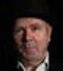

Bjarne Hansen,
violin - koncertmester i Det Kgl. Kapel efter en lang årrække som
koncertmester i Odense Symfoniorkester. Solist og kammermusiker i ind- og udland.
Ole Bartholin Kiilerich,
klaver - uddannet i solistklassen ved Syddansk Musikkonservatorium.
En alsidig performer og kammermusiker, der flere gange har optrådt som solist med Odense
Symfoniorkester.

Jørgen Ehlers,
guitar - docent ved Syddansk Musikkonservatorium, der er aktiv som musiker
og komponist med flere udgivelser i eget navn inden for de senere år.
Jens Krøgholt,
kontrabas - bassist i Odense Symfoniorkester, der befinder sig lige så godt i
både jazz- og folksammenhæng.
Branko Djordjevic,
akkordeon – Vinder af internationale konkurrencer i Italien, Tyskland,
Serbien og Danmark og er en virtuos solist ved koncerter indenfor klassisk, klezmer, balkan
og ikke mindst tangomusik.